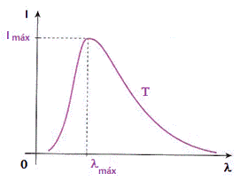
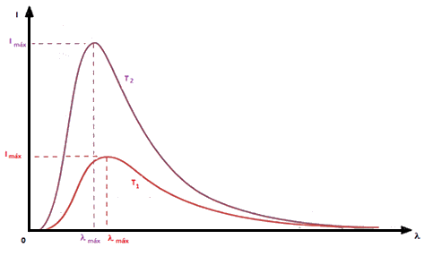

Sumário
Radiação de um corpo negro
Definição
Corpo negro é um corpo ideal que absorve toda a radiação que incide no mesmo.
É um absorvedor perfeito, com poder de absorção igual a 1. Como emissividade e
absortividade são iguais, de acordo com a Lei de Kirchhoff, um corpo negro também
terá emissividade igual a 1.
Portanto a Lei de Stefan-Boltzmann, para um corpo negro passa a ser:
[...] Qualquer corpo negro, na mesma temperatura, emite radiação térmica com a mesma intensidade total. Cada radiação de determinado comprimento de onda, na mesma temperatura, também é emitida com a mesma intensidade por todos os corpos negros, não importando o material de que sejam feitos [...]
Acima vemos uma pequena explicação sobre a irradiação de um corpo negro.
O gráfico abaixo apresenta a intensidade em função do comprimento de onda.

Podemos observar o gráfico e chegar a conclusão de que a radiação térmica emitida é composta por inúmeras radiações, distribuídas em uma faixa contínua de \lambda. E a radiação de um certo \lambda é emitida com máxima intensidade.
Lei de Deslocamento de Wien
É a lei que relaciona o comprimento de onda, onde situa a
máxima emissão de radiação de um corpo negro, e a sua temperatura.

Observando, ao passar de T1 para T2, é importante notar que a intensidade de cada radiação
emitida, em um determinado λ, aumenta. Bem como a intensidade total da radiação.
Em 1893, Wilhelm Wien demonstrou que o ponto máximo da curva desloca-se de acordo com a
expressão. A fórmula é a seguinte:
Onde b é a constante de dispersão de Wien, cujo valor é b = 2,898x10^{-3} m.K
RESUMÃO
Chegou a hora de fazer o Resumão! Para isso, aqui vão algumas dicas para você fazer o seu de forma completa e saber tudo sobre os Radiação de um Corpo Negro:
- Um corpo negro é um corpo ideal para absorção do calor.
- Como dito anteriormente, um corpo emite a mesma quantidade que absorve, portanto um corpo negro é o ideal para absorver e emitir radiação.
Refêrencias